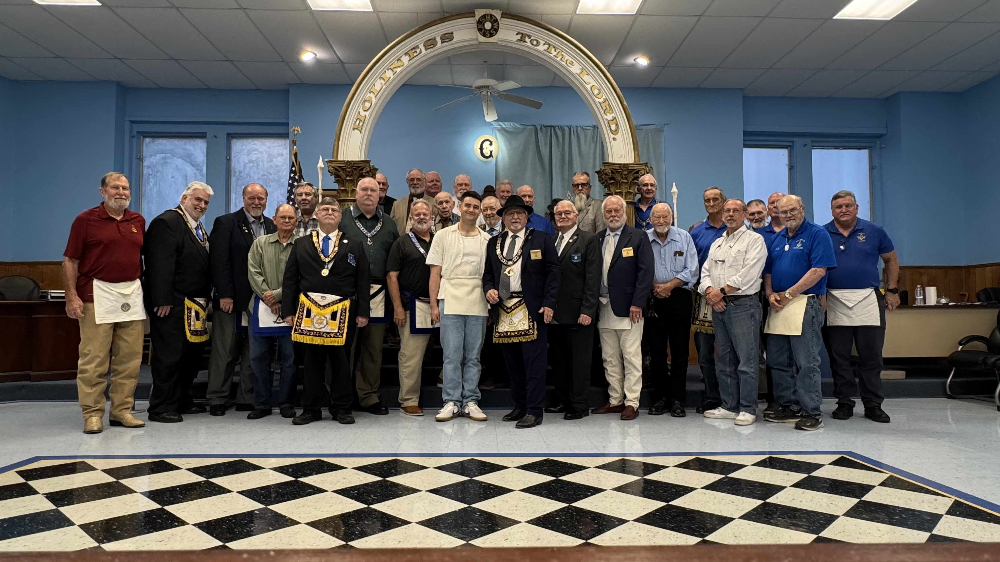

Welcome
Welcome to Magnolia Lodge #120 Free and Accepted Masons.

Stated Communications Meeting
2nd Thursday of each month
Dinner at 6:00pm
Meeting at7:00pm
Degree Practice & Rehearsals
Lodge practice is held each Monday evening.
Snacks and coffee at 6:00pm
Practice starts at 7:00pm
Brothers are encouraged to attend and participate in ritual work, candidate preparation, and degree rehearsals.
For additional information, contact the Worshipful Master or Secretary.